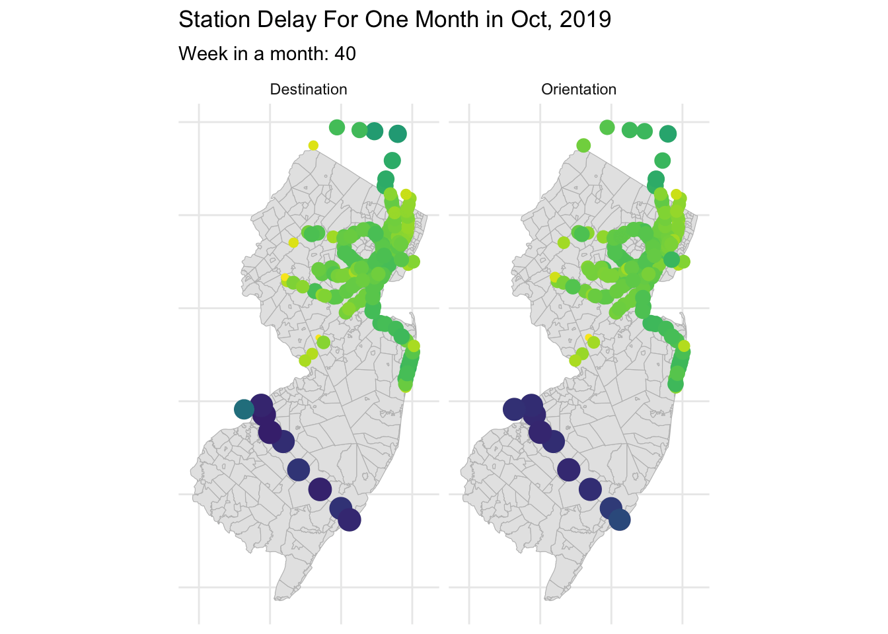
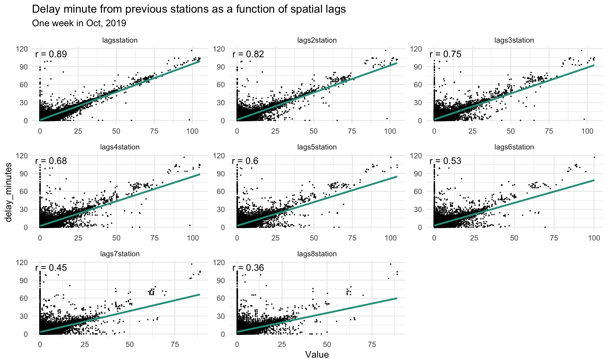

Serving as the second largest commuter rail network in the United State, the NJ Transit spans New Jersey and the state to New York City. However, their delays are getting worse with more office workers returning, on the other hand, there are no interactive apps for commuters that can predict the immediate delays that may happen by chance or fixedly occur on their daily commute routes during the day. As such, they cannot foresee them instantly and mitigate accordingly.
In our project, we further investigate into the delay performance on NJ transit’s commuter rail routes and come up with some interactive & instant predictive strategies targeted at commuters within NJ Transit Commuter Rail Routes.
As such, Delay detective is designed with commuters in mind. The functions include the notifications of the estimated arrival time before scheduled arrival time, on-time & average-delay performance, as well as passenger feedback.
Code
library(tidycensus)library(tidyverse)library(dplyr)library(sf)library(ggplot2)library(lubridate)library(tigris)library(viridis)library(riem)library(gridExtra)library(knitr)library(kableExtra)library(RSocrata)library(spdep)library(caret)library(ckanr)library(FNN)library(grid)library(gridExtra)library(ggcorrplot) # plot correlation plotlibrary(corrr) # another way to plot correlation plotlibrary(kableExtra)library(jtools) # for regression model plotslibrary(ggstance) # to support jtools plotslibrary(ggpubr) # plotting R^2 value on ggplot point scatterlibrary(broom.mixed) # needed for effects plotslibrary(vtable)library(gganimate)library(gifski)library(purrr)library(geosphere)library(googlesheets4)library(corrplot)plotTheme <-theme(plot.title =element_text(size=12),plot.subtitle =element_text(size=8),plot.caption =element_text(size =6),axis.text.x =element_text(size =10, angle =45, hjust =1),axis.text.y =element_text(size =10),axis.title.y =element_text(size =10),# Set the entire chart region to blankpanel.background=element_blank(),plot.background=element_blank(),#panel.border=element_rect(colour="#F0F0F0"),# Format the gridpanel.grid.major=element_line(colour="#D0D0D0",size=.2),axis.ticks=element_blank())mapTheme <-theme(plot.title =element_text(size=10),plot.subtitle =element_text(size=8),plot.caption =element_text(size =6),axis.line=element_blank(),axis.text.x=element_blank(),axis.text.y=element_blank(),axis.ticks=element_blank(),axis.title.x=element_blank(),axis.title.y=element_blank(),panel.background=element_blank(),panel.border=element_blank(),panel.grid.major=element_line(colour ='transparent'),panel.grid.minor=element_blank(),legend.direction ="vertical", legend.position ="right",plot.margin =margin(1, 1, 1, 1, 'cm'),legend.key.height =unit(1, "cm"), legend.key.width =unit(0.2, "cm"))source("https://raw.githubusercontent.com/urbanSpatial/Public-Policy-Analytics-Landing/master/functions.r")palette6 <-c("#264653","#2a9d8f",'#8AB17D',"#e9c46a",'#f4a261',"#e76f51")palette5 <-c("#264653","#2a9d8f","#e9c46a",'#f4a261',"#e76f51")palette4 <-c("#264653","#2a9d8f","#e9c46a","#e76f51")palette2 <-c("#264653","#2a9d8f")
*NJ Transit Delay Data — The dataset provides delay data for each month between NJ transit 2018-2019, and delay data for October 2019 was used in this project.
*NJ Rail Station & Line Data — The dataset provides the geometry data of the line and station, and be used for further data visualization.
*Weather Data — The dataset provides the weather data collected from the weather stations. And the dataset include the precipitation, wind speed and temperature data.
*Census Data — The dataset is provided by Census Bureau and gives the social-ecnomic situation of city.
Serial Autocorrelation - Fixed Effects
From the Temporal Series Analysis, We can find that Delay in NJ Transit has an obvious regularity in the temporal field. We were able to find that weekend delays had a longer average length than weekdays. And when we look at latency over a 24-hour period, we can see that latency reaches its maximum between 2:00 a.m. and 3:00 a.m., and overall latency stays on an upward trend from 4:00 a.m. onwards. And when we look at the relationship between stop sequence and delay time, we are able to see that the average latency time increases as the station sequence increases. We were able to find the highest latency in the PM Rush phase, followed by the overnight phase. When we wanted to explore the compounding of time, we were able to find that the PM Rush phase and the overnight phase had significantly higher latency times on weekends than on weekdays. And when we look at the pattern of average delay times for 24 hours in a day compared to weekdays and weekends, we find that they both maintain a similar pattern.
Code
delay_time <- merged_dataset %>%group_by(time_of_day)%>%summarize(mean_delay =mean(delay_minutes))delay_day <- merged_dataset %>%group_by(dotw)%>%summarize(mean_delay =mean(delay_minutes))delay_week <- merged_dataset %>%group_by(weekend)%>%summarize(mean_delay =mean(delay_minutes))delay_hour <- merged_dataset %>%group_by(hour(interval60))%>%summarize(mean_delay =mean(delay_minutes))%>%rename(hour ='hour(interval60)')delay_sequence <- merged_dataset %>%group_by(stop_sequence)%>%summarize(mean_delay =mean(delay_minutes))delay_time_week <- merged_dataset %>%group_by(time_of_day,weekend)%>%summarize(mean_delay =mean(delay_minutes))delay_week_hour <- merged_dataset %>%group_by(weekend,hour(interval60))%>%summarize(mean_delay =mean(delay_minutes))%>%rename(hour ='hour(interval60)')grid.arrange(ggplot(data = delay_day, aes(x = dotw, y = mean_delay)) +geom_bar(stat ="identity",fill ="#2a9d8f") +labs(title ="Delay minutes in a week", x ="Day of The Week", y ="Mean Delay") +theme_minimal(),ggplot(data = delay_week, aes(x = weekend, y = mean_delay)) +geom_bar(stat ="identity",fill = palette2) +labs(title ="Delay comparison in Weekend", x ="Weekend or Weekday", y ="Mean Delay") +theme_minimal(),ggplot(data = delay_hour, aes(x = hour, y = mean_delay)) +geom_bar(stat ="identity",fill ="#2a9d8f") +labs(title ="Delay minutes in 24 hours", x ="Hour in a day", y ="Mean Delay") +theme_minimal(),ggplot(data = delay_sequence, aes(x = stop_sequence, y = mean_delay)) +geom_bar(stat ="identity",fill ="#2a9d8f") +labs(title ="Delay minutes in each sequence", x ="Stop Sequence", y ="Mean Delay") +theme_minimal(),ggplot(data = delay_time, aes(x = time_of_day, y = mean_delay)) +geom_bar(stat ="identity",fill ="#2a9d8f") +labs(title ="Delay minutes in a week", x ="Day of The Week", y ="Mean Delay") +theme_minimal(),ggplot(data = delay_week_hour, aes(x = hour, y = mean_delay, color = weekend)) +geom_line() +scale_color_manual(values = palette2) +labs(title ="The delay under week and time", x ="Hour", y ="Delay Minutes") +theme_minimal(),nrow=3)
Code
merged_dataset%>% dplyr::select(interval60, from, delay_minutes) %>%gather(Variable, Value, -interval60, -from) %>%group_by(Variable, interval60) %>%summarize(Value =mean(Value))%>%ggplot(aes(interval60, Value)) +geom_line(size =0.8,colour="#2a9d8f")+labs(title ="Delay distribution in A Month", subtitle ="NJ, Oct, 2019", x ="Day", y="Mean Delay") +theme_minimal()
Spatial Autocorrelation - Fixed Effects
From the charts and maps, we can observe that the delay time is highly associated with station and line. Specifically, the Atlantic city line has the most serious delay situation.Same with the stations along the Atlantic city Line. However, NJ Transit Commuter Routes as a whole have similar trends in delays. Also, in order to compare the difference in delay time, we compared the size of the city where the station is located with delay time based on census tracts under counties and defined cities with populations over 100,000 as big cities. It was found that delay time was an insignificant factor. In the meantime, from the map we can also conclude that the direction doesn’t seem to have a significant influence on delay in general.
Code
delay_line <- merged_dataset %>%group_by(line)%>%summarize(mean_delay =mean(delay_minutes))%>%arrange(., mean_delay)delay_from <- merged_dataset %>%group_by(from)%>%summarize(mean_delay =mean(delay_minutes))%>%arrange(., -mean_delay)%>%head(20)big_from <- merged_dataset %>%group_by(From_city)%>%summarize(mean_delay =mean(delay_minutes))%>%mutate(status ='from')%>%rename(city_type = From_city)big_to <- merged_dataset %>%group_by(To_city)%>%summarize(mean_delay =mean(delay_minutes))%>%mutate(status ='to')%>%rename(city_type = To_city)grid.arrange(ggplot(data = delay_line, aes(x = line, y = mean_delay, fill = mean_delay)) +geom_col(position ="dodge")+labs(title ="Delay minutes comparison in lines", x ="line", y ="Mean Delay") +scale_fill_gradient(low ="#2a9d8f", high ="#264653") +theme_minimal()+theme(axis.text.x =element_text(angle =15, hjust =1)) ,ggplot(data =rbind(big_from,big_to), aes(x = status , y = mean_delay, fill = city_type)) +geom_col(position ="dodge")+labs(title ="Delay minutes comparison in big and small city", x ="City Type", y ="Mean Delay") +scale_fill_manual(values = palette2)+theme_minimal()+theme(axis.text.x =element_text(angle =0 , hjust =1)),ggplot(data = delay_from, aes(x = from, y = mean_delay, fill = mean_delay)) +geom_col(position ="dodge")+labs(title ="Delay minutes comparison in lines", x ="line", y ="Mean Delay") +scale_fill_gradient(low ="#2a9d8f", high ="#264653") +theme_minimal()+theme(axis.text.x =element_text(angle =30, hjust =1)))
In addition to the influence of the temporal and spatial dimensions on the delay time, we also wanted to explore the influence of some external factors as well as the operational factors of the train system on the delay.Looking at the weather conditions in October, the temperatures showed a fluctuating downward trend, while at the precipitation level several large precipitation events were found in the second half of October.
For the number of intersections, overall the delay time decreases as more lines pass through the station, while the direction of the line has no significant effect on the intersection. When we focus on the effect of weather on the delay, we can find that rainy weather will have higher delay time, and as the weather rises the delay time will show a decreasing trend. This result may be explained by the fact that trains travel at lower speeds in rainy weather and that trains take more time to start up in low temperatures. The distance between stations does not have a significant effect on the delay time.
Code
delay_distance <- merged_dataset %>%group_by(distance)%>%summarize(mean_delay =mean(delay_minutes))delay_intersct <-rbind( merged_dataset %>%group_by(from_inter)%>%summarize(mean_delay =mean(delay_minutes))%>%mutate(status ='from')%>%rename(inter = from_inter), merged_dataset %>%group_by(to_inter)%>%summarize(mean_delay =mean(delay_minutes))%>%mutate(status ='to')%>%rename(inter = to_inter))delay_rain_week <- merged_dataset %>%mutate(rain =ifelse(Precipitation ==0,'NoRain','Rain'))%>%group_by(rain)%>%summarize(mean_delay =mean(delay_minutes))delay_temp <- merged_dataset %>%group_by(Temperature)%>%summarize(mean_delay =mean(delay_minutes))# just calculate the intersecation delaygrid.arrange(ggplot(data = delay_intersct, aes(x = inter, y = mean_delay,fill=status)) +geom_col(position ="dodge") +scale_fill_manual(values = palette2) +labs(title ="Delay minutes in each intersection", x ="Num of Intersection", y ="Mean Delay") +theme_minimal(),ggplot(data = delay_rain_week, aes(x = rain, y = mean_delay,fill=rain)) +geom_col(position ="dodge") +scale_fill_manual(values = palette2) +labs(title ="Delay minutes with Rain", x ="Rain", y ="Mean Delay") +theme_minimal(),ggplot(data = delay_distance, aes(x = distance, y = mean_delay)) +geom_line(color ="#2a9d8f") +labs(title ="The relationship between delay and distance", x ="Distance", y ="Value") +geom_smooth(method ="lm", se =TRUE)+theme_minimal(),ggplot(data = delay_temp, aes(x = Temperature, y = mean_delay)) +geom_line(color ="#2a9d8f") +labs(title ="The relationship between delay and temperature", x ="Temperature", y ="Value") +geom_smooth(method ="lm", se =TRUE)+theme_minimal())
Space-time Autocorrelation
After the spatial and temporal analysis, We would like to explore more deeply the autocorrelation of space-time with delay time. Looking at the distribution of the average delay time in terms of time and site, we were able to find a delay effect of the average delay time on the site. Therefore, we can draw the inference that the front site on a route will have a lagging effect on the delay time of the back site. And overall, the commuting area around New York has much smaller and more consistent delays, relative to the Atlantic City line.
Code
delay_stop_time <- merged_dataset %>%group_by(from,to,hour(interval60))%>%summarize(mean_delay =mean(delay_minutes))%>%rename(hour ='hour(interval60)')%>%left_join(stop,by=c('from'='STATION_ID'))%>%st_as_sf(coords =c("LONGITUDE", "LATITUDE"), crs =4326)ggplot() +geom_sf(data = NJTracts, color ='grey') +geom_sf(data = delay_stop_time, aes(size = line_intersct,color = mean_delay)) +scale_colour_viridis(direction =-1,discrete =FALSE, option ="D") +labs(title ="Station Delay For One Day in Oct, 2019",subtitle ="Hours in a day: {current_frame}") +transition_manual(hour)+mapTheme()+theme_minimal()
And when we want to consider the effect of intersections on delay times, we are able to find that the number of intersections on weekdays does not have a large impact on the degree of delay, except for the New York station which has a smaller delay time. This may be due to the fact that New York station has more passenger throughput resulting in a tighter departure frequency. On weekends, we are able to find that stations that are intersections have lower average delay times.
And in addition to exploring the phenomenon of temporal pattern in a day, we also hope to discover temporal patterns over long periods of time. In a weekly dimension, we find that weekday and weekend delays are relatively stable, and the direction of the line does not have a significant spatial effect on the delay. Similarly, when we go to look at the spatial distribution of the average delay time for each week in a month, the variation in delay time is small and very stable.
Code
delay_to_time <- merged_dataset %>%group_by(to,dotw)%>%summarize(mean_delay =mean(delay_minutes))%>%rename(Day = dotw)%>%left_join(stop,by=c('to'='STATION_ID'))%>%st_as_sf(coords =c("LONGITUDE", "LATITUDE"), crs =4326)%>%mutate(status ='Orientation')%>%rename(station = to)delay_from_time <- merged_dataset %>%group_by(from,dotw)%>%summarize(mean_delay =mean(delay_minutes))%>%rename(Day = dotw)%>%left_join(stop,by=c('from'='STATION_ID'))%>%st_as_sf(coords =c("LONGITUDE", "LATITUDE"), crs =4326)%>%mutate(status ='Destination')%>%rename(station = from)ggplot() +geom_sf(data = NJTracts, color ='grey') +geom_sf(data =rbind(delay_from_time,delay_to_time), aes(size =mean_delay, color = mean_delay)) +scale_colour_viridis(direction =-1,discrete =FALSE, option ="D") +labs(title ="Station Delay For One Week in Oct, 2019",subtitle ="Day in a week: {current_frame}") +facet_wrap(~status)+transition_manual(Day)+mapTheme()+theme_minimal()
Code
delay_to_time <- merged_dataset %>%group_by(to,week)%>%summarize(mean_delay =mean(delay_minutes))%>%left_join(stop,by=c('to'='STATION_ID'))%>%st_as_sf(coords =c("LONGITUDE", "LATITUDE"), crs =4326)%>%mutate(status ='Orientation')%>%rename(station = to)delay_from_time <- merged_dataset %>%group_by(from,week)%>%summarize(mean_delay =mean(delay_minutes))%>%left_join(stop,by=c('from'='STATION_ID'))%>%st_as_sf(coords =c("LONGITUDE", "LATITUDE"), crs =4326)%>%mutate(status ='Destination')%>%rename(station = from)ggplot() +geom_sf(data = NJTracts, color ='grey') +geom_sf(data =rbind(delay_from_time,delay_to_time), aes(size =mean_delay, color = mean_delay)) +scale_colour_viridis(direction =-1,discrete =FALSE, option ="D") +labs(title ="Station Delay For One Month in Oct, 2019",subtitle ="Week in a month: {current_frame}") +facet_wrap(~status)+transition_manual(week)+mapTheme()+theme_minimal()

Overall, the spatial-temporal distribution of delay times is consistent with the findings of the temporal and spatial analyses conducted in the previous At the same time, we found a spatial manifestation of the lag effect of delay times at the site level. This provides us with a choice of new independent variables for the subsequent construction of the predictive model.
Lag Effects
Based on the exploratory analysis described above, we found lag effects on delay times at the spatial and temporal levels, so we created temporal lag and spatial lag variables to make predictions in our real-world model. In a practical sense, the temporal lag can be interpreted as the effect of the amount of delay that occurs before a certain time at a passenger’s stop on the delay of the schedule he is traveling on. The spatial lag can be interpreted as the effect of the delay of the stop of the passenger’s trip before a certain time at his stop on the delay of the stop at which he is traveling.
Because for the USE CASE we want to realize the delay prediction of passengers in the period before boarding, we choose a relatively small time lag of 15 minutes as the unit, so that we can provide more time lag variables to be added in the model the closer the boarding time is to the boarding time.
Time Lag
In terms of the correlation of the time-lagged variables with respect to the delay time, their correlation with the delay time decreases as the lag time increases. However, in general, the correlation of delay time in the same site is overall low.
As for the correlation of spatial lags, we were able to find that the overall correlation of the lagged variables of the sites for the delay time decreases as the number of lagged sites increases. However, overall, the correlation of spatially lagged variables to delay time is high.

Overall, at the level of lagged impacts, spatial lagged impacts possess a high correlation for delay times, while temporal lagged impacts do not have a high correlation for delay times.
Correlation Matrix
In summary, we found the influence of factors on delay time at the spatial, temporal, operational, and lag effect levels, and we constructed a correlation matrix to visualize the correlation between the factors and the delay time for better screening of effective independent variables for subsequent data modeling. From the matrix, we can find that the spatial lag and time lag variables have more obvious effects on delay time.
Based on the above analysis and the use of our application scenarios, we constructed three models, respectively, 30 minutes ago, 60 minutes ago and 90 minutes ago, for different time periods from the expected arrival time to analyze (in the actual use of the model there may be more time periods to carry out a more accurate prediction, in this project in order to reflect the concept of multiple time periods and multiple models to choose the three models to talk about and analyze). The variables corresponding to the models with longer time lags further away from the departure time can only be selected with further time lags and spatial lags to correspond to the available data situation in the actual context. Among the variables used in the model, the following main types are included:
[space relevant variable] – Line, Intersection, Station, Direction
[temporal/spatial lag variable] – (based on the different models)
And for model selection, we chose Ordinary Least Squares regression (OLS) model for model construction. The model has many advantages such as easy computation as well as interpretability.
From the comparison of predicted and actual delay times, we can see that the closer the model is to the predicted time has a better model predictive ability. Whereas the model has worse predictive ability for very large and very small values.
And when we focus on the spatial generalizability of the model’s performance, we are um able to find that all three models show a more even MAE, except for the line from New York to the north. Other than that, we are able to find that the models have larger model errors for stations in and around New York. This phenomenon may stem from the fact that in New York there is a higher frequency of trips and the same station may be affected by the delay time of trips on different lines.
And in addition to model error assessment in space, we would also like to see if the model performs more universally across time. Overall, the models perform better on weekdays, both in terms of the magnitude of the errors and the stability of the errors. Moreover, both the error of the model and the s d of the error increase with the length of the model prediction. In terms of the comparison between weekdays and weekends, the three models have a smaller error boost on weekdays with the increase of time. In terms of the distribution of errors, the models on weekdays show a generally smaller standard divination. Therefore, we can conclude that the models on weekdays can have a more stable error range.
When we look at the spatial distribution of this modeled performance difference between weekdays and weekends, we are able to find that the line north from New York possesses a smaller weekend and weekday error difference. The spatial difference between weekdays and weekends is primarily seen for lines heading south from New York, with stations on these lines having higher model errors on weekends.The reason this error exists may stem from the fact that on weekends more passengers from cities south of New York (e.g., Philadelphia and Jersey City) commute between New York and their locations for recreational or other purposes, and thus the same frequency in the face of significantly higher traffic may create a greater likelihood of delays.
n turn, the model’s performance for the line shows more similar characteristics at the spatial level. All of the routes exhibit larger errors as they are pushed farther back in time. Specifically, the lines from New York northward have smaller errors and are less affected by the different time models than the other lines. The Northeast Corridor, on the other hand, has the worst performance of the models that are closest in time. However, as we push farther back in time, the modeled errors show a similar pattern for the other lines.
In the case of over- or under-forecasting, we find that all three models exhibit under-forecasting, and that the degree of under-forecasting increases as we move farther back in the model’s time. Therefore, in the actual model prediction, we can increase the model noise according to the model to increase the accuracy of the model prediction.
In order to better test the model’s ability to perform in real-world scenarios, i.e., on new datasets, we evaluate the model’s ability using cross-validation.
Looking at the performance of the three models, we can see that the errors of the models show a gradual increase as time is pushed farther away. Regarding the stability of the model error, we can find that the 30-minute model has better stability. And as the time of the model is pushed farther, we can find that the R-square of the model shows a decreasing trend, which indicates that the credibility of the model is also decreasing with the increase of time.
Code
grid.arrange(dplyr::select(reg.cv.30$resample, -Resample) %>%gather(metric, value) %>%left_join(gather(reg.cv.30$results[2:4], metric, mean)) %>%ggplot(aes(value)) +geom_histogram(bins=35, fill ="#2a9d8f") +facet_wrap(~metric) +geom_vline(aes(xintercept = mean), colour ="#e76f51", linetype =3, size =1.5) +scale_x_continuous(limits =c(0, 5)) +labs(x="Goodness of Fit", y="Count", title="CV Goodness of Fit Metrics-30mins Model",subtitle ="Across-fold mean reprented as dotted lines")+theme_minimal(),dplyr::select(reg.cv.60$resample, -Resample) %>%gather(metric, value) %>%left_join(gather(reg.cv.60$results[2:4], metric, mean)) %>%ggplot(aes(value)) +geom_histogram(bins=35, fill ="#2a9d8f") +facet_wrap(~metric) +geom_vline(aes(xintercept = mean), colour ="#e76f51", linetype =3, size =1.5) +scale_x_continuous(limits =c(0, 5)) +labs(x="Goodness of Fit", y="Count", title="CV Goodness of Fit Metrics-60mins Model",subtitle ="Across-fold mean reprented as dotted lines")+theme_minimal(),dplyr::select(reg.cv.90$resample, -Resample) %>%gather(metric, value) %>%left_join(gather(reg.cv.90$results[2:4], metric, mean)) %>%ggplot(aes(value)) +geom_histogram(bins=35, fill ="#2a9d8f") +facet_wrap(~metric) +geom_vline(aes(xintercept = mean), colour ="#e76f51", linetype =3, size =1.5) +scale_x_continuous(limits =c(0, 5)) +labs(x="Goodness of Fit", y="Count", title="CV Goodness of Fit Metrics-90mins Model",subtitle ="Across-fold mean reprented as dotted lines")+theme_minimal(),nrow=3)
Code
combined_summary <-bind_rows( reg.cv.30$resample %>%summarise(Model ="30 min Model",MAE =mean(.[,3]),sd =sd(.[,3])), reg.cv.60$resample %>%summarise(Model ="60 min Model",MAE =mean(.[,3]),sd =sd(.[,3])), reg.cv.90$resample %>%summarise(Model ="90 min Model",MAE =mean(.[,3]),sd =sd(.[,3])))combined_summary %>%as.data.frame() %>%mutate(Model =factor(Model, levels =c("30 min Model", "60 min Model", "90 min Model"))) %>%kbl(col.names =c('Model', 'Mean Absolute Error', 'Standard Deviation of MAE')) %>%kable_styling(bootstrap_options =c("striped", "hover", "condensed"))
Model
Mean Absolute Error
Standard Deviation of MAE
30 min Model
1.804856
0.0230556
60 min Model
2.242522
0.0292971
90 min Model
2.418186
0.0257110
Conclusion
Overall, we can find that train delays are mainly affected by elements such as time, weather, and lagging delays, which are also very much in line with the actual scenarios in reality. In terms of modeling, overall the model performs better, and in terms of accuracy, the model’s MAE familiarization error is around 2-4 minutes, which is an acceptable modeling error for a practical application scenario. And from a generalizability perspective, we can see that the RMSE of the model shows a nearly normal distribution across multiple models, so the performance is better from a pure data perspective. However, from a spatial perspective, the model’s errors are more varied across different routes, with the route from New York to the north having a larger error than the other routes. Also in terms of the spatial and temporal distribution, the model has a larger error on weekends than on weekdays, and this difference in error varies from route to route.
Therefore, in order to make the model perform better, on the one hand, the model should be constructed with smaller time intervals (e.g., 10 minutes or even 5 minutes as the modeling interval) in order to obtain more lagged variables to obtain better model accuracy. In terms of model generalizability, the current model does not reflect the characteristics of different routes well, which leads to significant differences in the model performance of stations on different routes. Therefore, in the optimization of the model, more characteristics of the lines should be explored (e.g., physical information such as the year of construction and quality of the track, and station-related service information such as the line capacity of the station) to reduce the line-level errors.